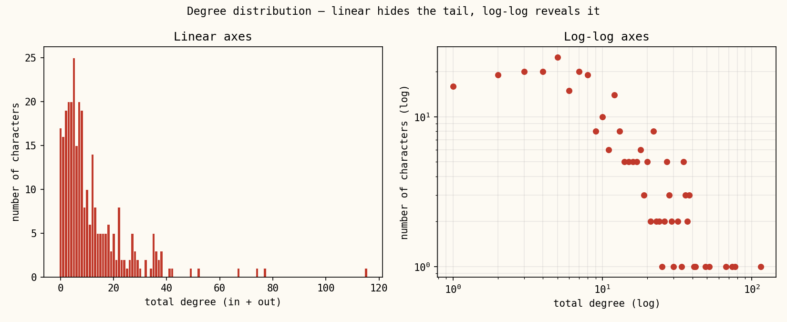
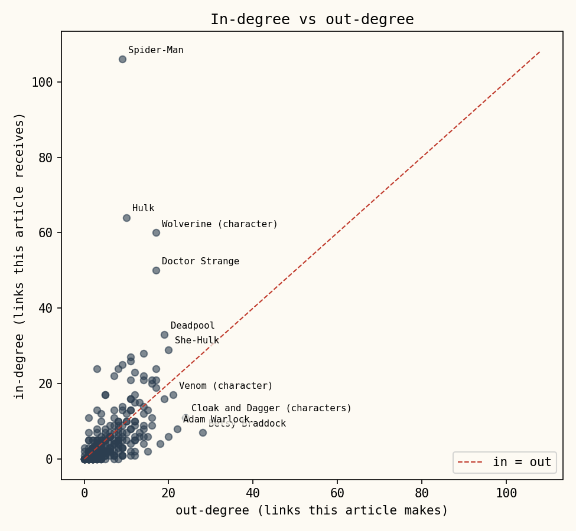

We went in with one question: what does this network actually look like once you draw it? Below is a live, force-directed map of the whole thing, built with pandas and networkx and set loose in the browser with d3 — plus the numbers and case files we dug out of it along the way.
networkx only learns about
nodes it's seen on an edge — those 17 would silently disappear. We loaded the full character
list first, specifically so the isolates would show up as isolates instead of quietly
vanishing from the dataset.
The Network
Hover a hero to trace their wiring — who they cite, who cites them. Click one for their file. Drag if you want a fight. Node size tracks in-degree, our roughest proxy for fame in this corpus: how often a character gets named in someone else's article.
for a hero's file
By The Numbers
91% of the cast sits in one giant, mutually-tangled component — the rest either link to nobody (the gray dots above) or only to each other (the gold clique, more on them below). Inside that giant component it's a small world: any two characters are 2.7 hops apart on average, and 39% of links go both ways rather than just one. Spider-Man alone pulls in 106 incoming links and sends out only 9 — on Wikipedia, being famous mostly means other people cite you, not the reverse.
Case Files


Split degree by direction and the story sharpens. In-degree is roughly how famous a character is — how many other articles bother to cite them. Out-degree is closer to how much backstory their own article drags along. Those turn out to be almost entirely different rankings: Spider-Man, Hulk and Doctor Strange dominate in-degree, but the heaviest linkers out are characters like Betsy Braddock and Cloak and Dagger, whose retcon-heavy histories namecheck a lot of other characters without being famous enough themselves to get cited back at the same rate.
The real surprise wasn't the hub, though — it's the gold cluster in the network above: nine Strikeforce: Morituri characters (cast of a self-contained 1980s spinoff about humans handed superpowers that kill them within a year) who only ever link each other, exiled from the wider Marvel wiki exactly like the series was exiled from mainstream continuity. The 17 gray isolates tell a similar story from a different angle — golden-age holdovers, licensed crossovers, and rights-tangled characters, all sitting just outside a graph that otherwise runs on cross-references. Toggle The Outsiders above and go meet them yourself.
Built with pandas, networkx & d3 · frozen snapshot 2026-08-26 · nodes · edges